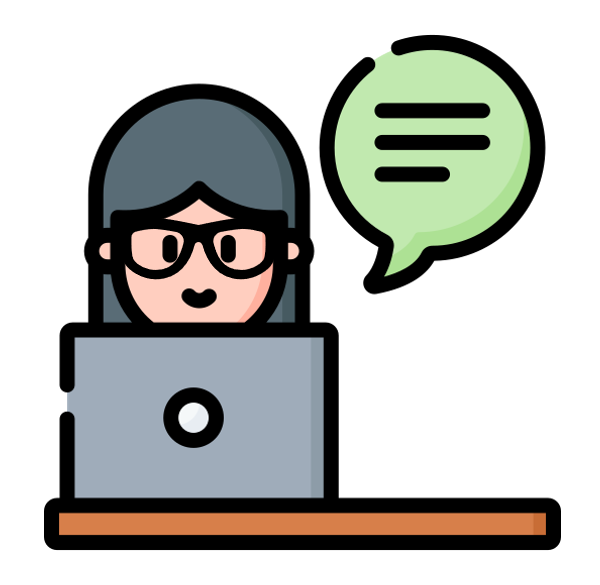
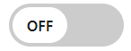

저시력장애란?
우리가 알고 있는 시각 장애인의 90%는 저시력 장애 입니다.
저시력 장애는 시력저하, 시야장애, 적록색맹 그리고 전색맹 등의 유형이 있습니다.
그 중 시력저하는 시력이 낮아 대상이 흐릿하게 보이는 상태로 안경, 렌즈, 수슬로 시력을 교정할 수 없습니다.
주로 확대 기능 혹은 tts 기능을 사용하여 웹을 이용합니다.

키보드를 이용하여 소리를 듣고 웹을 체험해보세요!
1. 소리를 듣고 [00 영화] 를 골라주세요.
2. ~~를 확인해주세요.
3. ~~ 를 통해 체험을 완료해주세요.

블러 기능의 ON/OFF가 가능합니다.